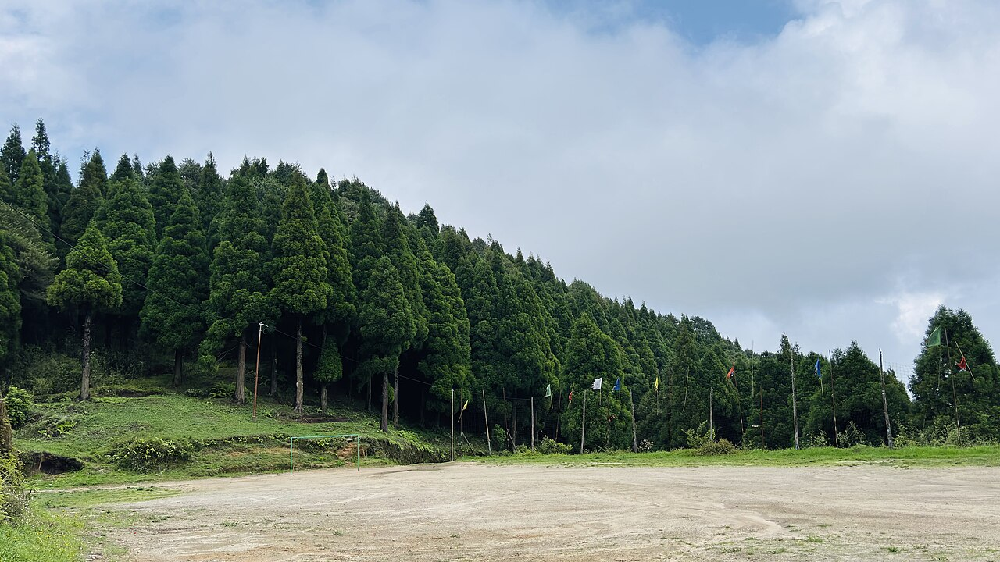

桐庐
/
玩乐地
/
大奇山国家森林公园
大奇山国家森林公园
县城 10 分钟 · 山林小溪 · 轻徒步

桐庐大奇山国家森林公园
建议从携程/App查看最新实拍
大奇山森林公园实景 · 照片待补充
距县城近
山林小溪
轻徒步
天然氧吧
项目
详情
地址
浙江省杭州市桐庐县大奇山路
门票
成人约 52；儿童 1.2m 以下免票，1.2–1.5m 半价
营业时间
08:00–16:00 左右
特点
距县城亚朵仅 10 分钟车程，最省力
山间小溪可踩水、看锦鲤，适合低幼
森林氧吧，徒步强度低
适合谁
踩水
轻松
注意：
国庆人会多，建议早到。
不是大乐园，玩水感较弱，适合第一天缓一缓。
介绍
如果不想每天长途开车，大奇山是最轻松的选项。从酒店过去 10 分钟，山林小溪、锦鲤池塘，适合第一天到达后慢慢走。